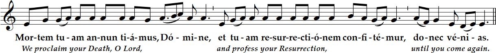
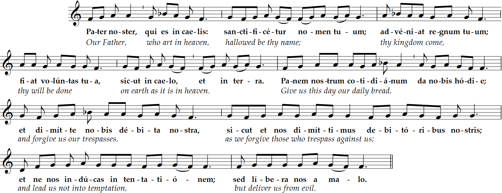

Twenty-eighth Sunday in Ordinary Time
6 PM Mass
Prelude “Plainte” Jean Langlais (1907 -1991)
Twenty-eighth Sunday in Ordinary Time
6 PM Mass
Prelude “Plainte” Jean Langlais (1907 -1991)
.png)
O Lord, if you were to take into account our iniquitites, who would withstand the test? But forgiveness abides with you, O God of Israel.
 - Si iniqutates.png)


On this mountain the LORD of hosts will provide for all peoples a feast of rich food and choice wines, juicy, rich food and pure, choice wines. On this mountain he will destroy the veil that veils all peoples, the web that is woven over all nations; he will destroy death forever. The Lord GOD will wipe away the tears from every face; the reproach of his people he will remove from the whole earth; for the LORD has spoken. On that day it will be said: "Behold our God, to whom we looked to save us! This is the LORD for whom we looked; let us rejoice and be glad that he has saved us!" For the hand of the LORD will rest on this mountain.
Brothers and sisters: I know how to live in humble circumstances; I know also how to live with abundance. In every circumstance and in all things I have learned the secret of being well fed and of going hungry, of living in abundance and of being in need. I can do all things in him who strengthens me. Still, it was kind of you to share in my distress. My God will fully supply whatever you need, in accord with his glorious riches in Christ Jesus. To our God and Father, glory forever and ever. Amen.
Jesus again in reply spoke to the chief priests and elders of the people in parables, saying, "The kingdom of heaven may be likened to a king who gave a wedding feast for his son. He dispatched his servants to summon the invited guests to the feast, but they refused to come. A second time he sent other servants, saying, 'Tell those invited: "Behold, I have prepared my banquet, my calves and fattened cattle are killed, and everything is ready; come to the feast."' Some ignored the invitation and went away, one to his farm, another to his business. The rest laid hold of his servants, mistreated them, and killed them. The king was enraged and sent his troops, destroyed those murderers, and burned their city. Then he said to his servants, 'The feast is ready, but those who were invited were not worthy to come. Go out, therefore, into the main roads and invite to the feast whomever you find.' The servants went out into the streets and gathered all they found, bad and good alike, and the hall was filled with guests. •• But when the king came in to meet the guests, he saw a man there not dressed in a wedding garment. The king said to him, 'My friend, how is it that you came in here without a wedding garment?' But he was reduced to silence. Then the king said to his attendants, 'Bind his hands and feet, and cast him into the darkness outside, where there will be wailing and grinding of teeth.' Many are invited, but few are chosen."
Homily + Profession of Faith
I believe in one God, the Father almighty,
maker of heaven and earth,
of all things visible and invisible.
I believe in one Lord Jesus Christ,
the Only Begotten Son of God,
born of the Father before all ages.
God from God, Light from Light, true God from true God,
begotten, not made, consubstantial with the Father;
through him all things were made.
For us men and for our salvation he came down from heaven,
and by the Holy Spirit was incarnate of the Virgin Mary,
and became man.
For our sake he was crucified under Pontius Pilate,
he suffered death and was buried,
and rose again on the third day
in accordance with the Scriptures.
He ascended into heaven
and is seated at the right hand of the Father.
He will come again in glory to judge the living and the dead
and his kingdom will have no end.
I believe in the Holy Spirit, the Lord, the giver of life,
who proceeds from the Father and the Son,
who with the Father and the Son is adored and glorified,
who has spoken through the prophets.
I believe in one, holy, catholic and apostolic Church.
I confess one Baptism for the forgiveness of sins
and I look forward to the resurrection of the dead
and the life of the world to come. Amen.
Prayer of the Faithful + Offertory + Liturgy of the Eucharist
“Remember me, O Lord, you who dominate all authority; put the right words on my lips, so that my speech may be convincing in the presence of the King.”
May the Lord accept the sacrifice at your hands,
for the praise and glory of his name, for our good, and the good of all his holy Church.



Deliver us Lord from every evil, graciously grant peace in our day, that by the help of your mercy we may be always free from sin
and safe from all distress, as we await the blessed hope, and the coming of our Savior, Jesus Christ.

Lord, I am not worthy that you should enter under my roof, but only say the word and my soul shall be healed.

1. I sought the LORD,
and he answered me,
delivered me from all my fears.
Look to him and be radiant,
and your faces may not blush for shame.
---
2. This poor one cried out and the LORD heard,
and from all his distress he saved him.
The angel of the LORD encamps
around those who fear him,
and he saves them.
---
3. Taste and see that the LORD is good;
blessed is the loyal one
who takes refuge in him.
Fear the LORD, you his holy ones;
nothing is lacking to those who fear him.
Such a great mystery, then, let us bow down and adore, and let the old covenant give way to the new: let faith provide for the weakness of the senses. To the Father and the Son let there be praise and jubilation, salvation, honor, strength and blessing; and to the Spirit proceeding from both let there be equal glory. Amen.

Queen, mother of mercy: our life, sweetness, and hope, hail. To thee do we cry, poor banished children of Eve.
To you we sigh, mourning and weeping in this va ley of tears.
Turn then, our advocate, those merciful eyes toward us. And Jesus, the blessed fruit of thy womb, after our exile, show us.
O clement, O loving, O sweet Virgin Mary
"St. Michael the Archangel, defend us in battle. Be our protection against the wickedness and snares of the devil.
May God rebuke him, we humbly pray; and do thou, O Prince of the heavenly hosts, by the power of God,
cast into hell Satan and all the evil spirits who prowl about the world seeking the ruin of souls. Amen."

Postlude “Fugue in E-flat Major” Johann Christoph Bach (1642-1703)